voor een rolespel game heb ik deze modellen gemaakt
voor de woon wijk maakte ik eerst huizen met allen een blok maar later heb ik meer detailed vensters gemaakt
| voor | na |
|---|---|
| 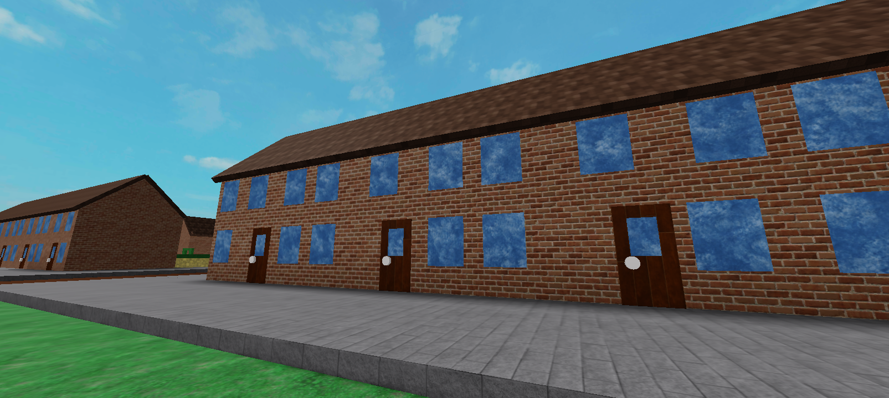 | 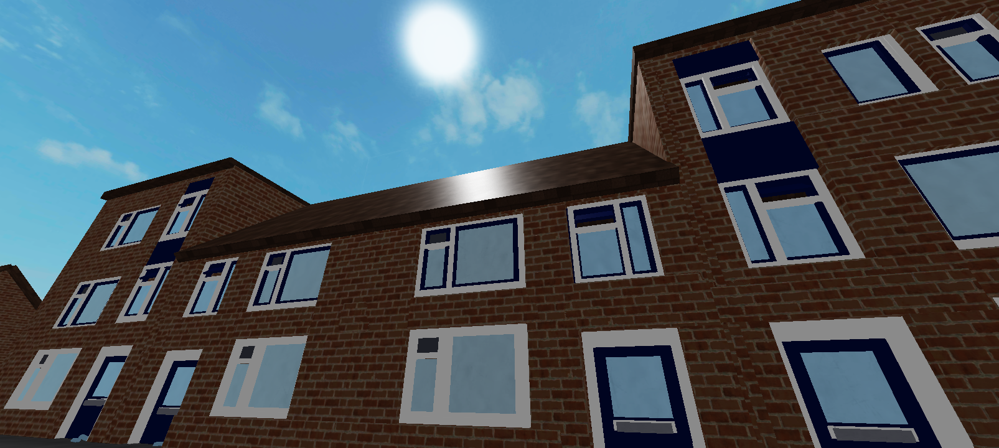 |
ik heb ook een paar bruggen gemaakt een van hout en een van steen
| houten brug | stenen brug |
|---|---|
|
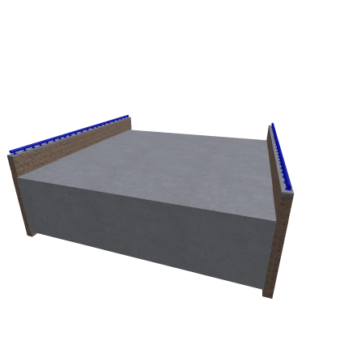 |
voor het volgende model wou ik dat werkende deur maken waardoor ik wou scripten het is een groote fila met een ondergrondse gerage voor veel autos
| huis buiten | huis binnen | ondergrondse garage |
|---|---|---|
| 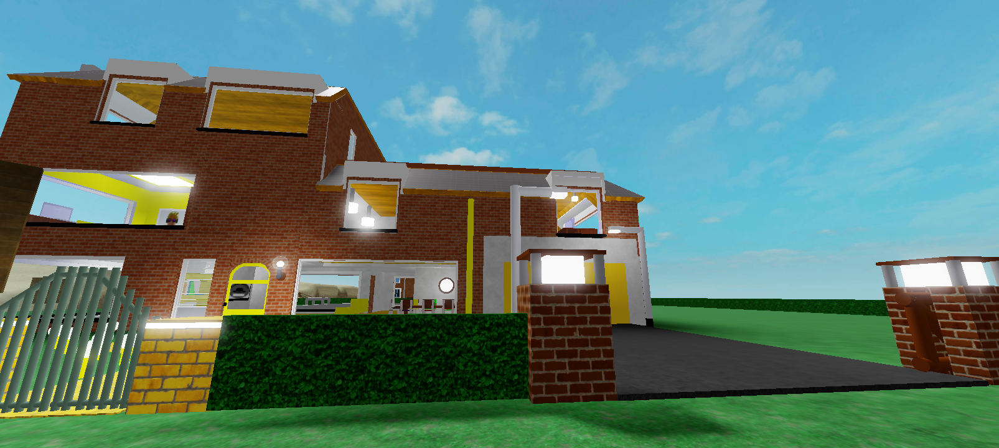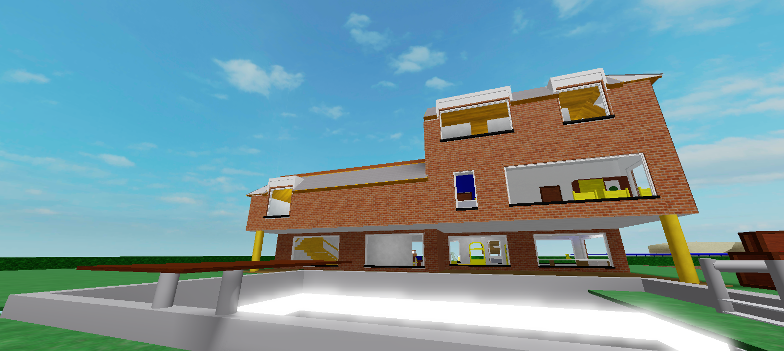 | 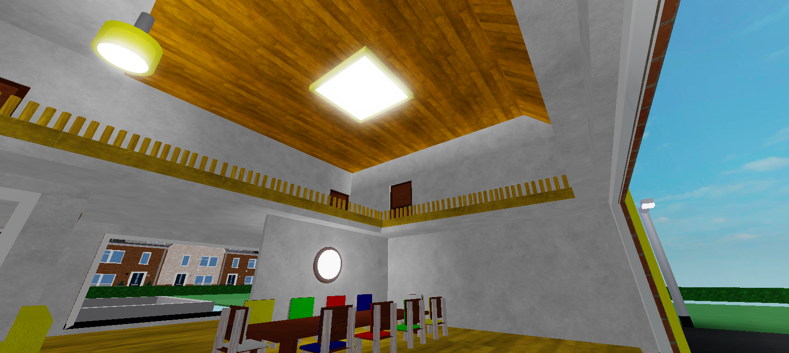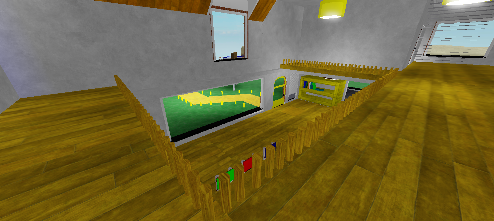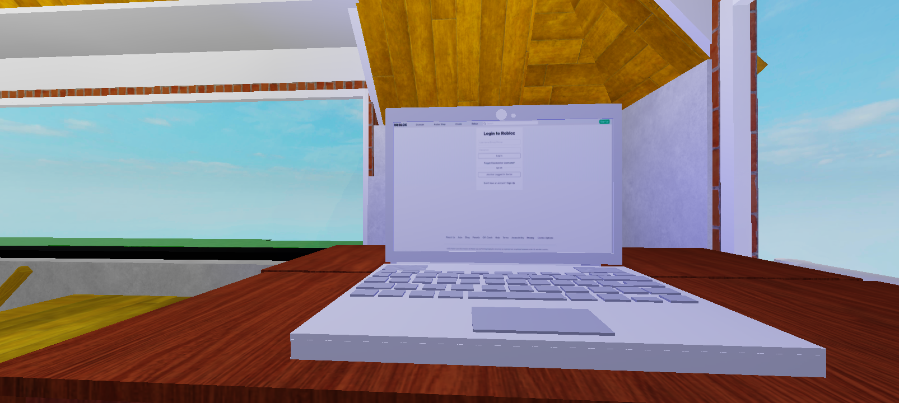 | 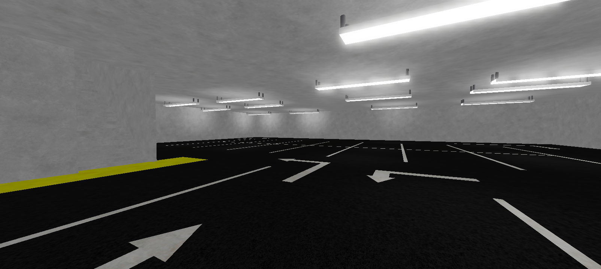 |
dit project is niet helemaal compleet en ik denk niet dat ik het ooit wil voltooien dan komen we bij het laatse deel van dit project het is...
voor dit project makte ik een paar meubels
| kast met deur | boeken kast | table | stoel | beuro | beuro stoel |
|---|---|---|---|---|---|
 |
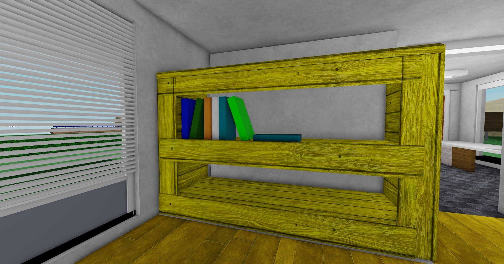 | 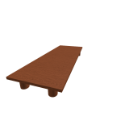 | 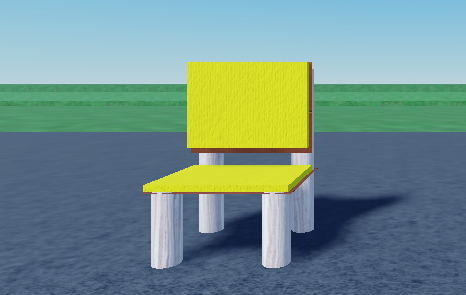 | 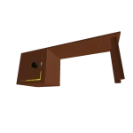 | 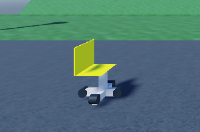 |